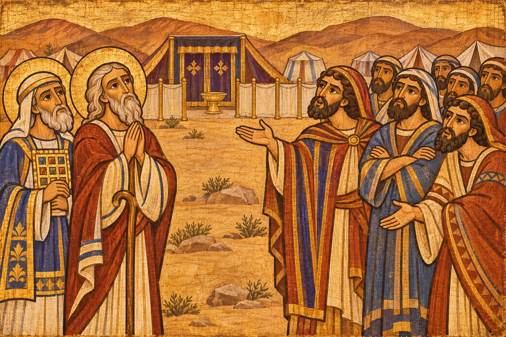
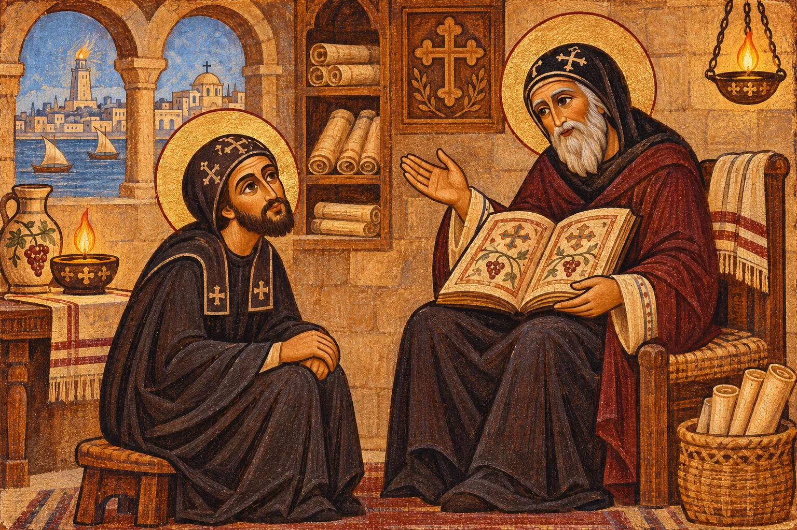

Which story does this moment belong to?
Choose a story to begin.
Korah, Dathan, and Abiram challenged Moses and Aaron. Pope Demetrius kept learning from his teacher even after becoming patriarch. Explore both stories, then sort the moments.
NUMBERS 16 · THE POPE DEMETRIUS LESSON TRADITION

Read a moment and tap the story it belongs to. Then try one question about showing respect today.
Which story does this moment belong to?
Choose a story to begin.
Pope Demetrius showed that even a leader can keep learning. Respect means listening and speaking kindly when we have a question.